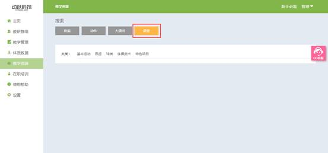

课堂视频
视频教程：
1. 登录动跃体育教学管理平台后，进入平台操作界面。
2. 点击进入教学资源 > 点击课堂按钮，如下图:

3. 根据教师的所需查找的教学动作内容，依次选择大类> 中间类。
>大类：将所有的运动动作分类,分为素质、运动、项目、水平四大类。
>中间类：每个教学大类下面，都细分为不同的具体运动项目。

4. 课堂视频为各个学校体育优质课视频，点击播放按钮或点击蓝色文本 , 播放视频 , 如下图:
5. 点击后，弹出播放页面，可以看到大课间操的视频内容。视频页面上方显示大课间名称，左下角显示视频时长和播放暂停键。